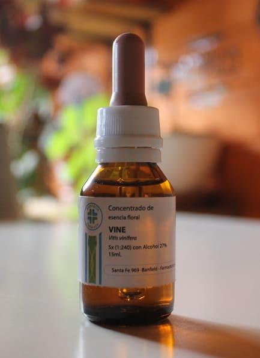

FLORES DE BACH

Se trata de un grupo de flores descubiertas por el Dr. en Medicina y Homeópata Edward Bach, quien dedicado a la investigación y el estudio de plantas silvestres, obtuvo 38 extractos de flores que utilizó en diferentes desequilibrios emocionales. La idea es combinar las flores a fin de acompañar el proceso que atraviesa el consultante.
En Irupé contamos con fórmulas pre-armadas para los procesos más frecuentes. Ofrecemos también una fórmula ajustada a la situación puntual que el consultante se encuentre transitando. Esta información se obtiene a través de cualquiera de nuestros medios de comunicación detallados en la página.
LISTADO DE FLORES SEGÚN GRUPO EMOCIONAL
- MIEDO
- Rock Rose
- Mimulus
- Cherry Plum
- Aspen
- Red Chestnut
- INCERTIDUMBRE
- Cerato
- Scleranthus
- Gentian
- Gorse
- Horn Beam
- Wild Oat
- FALTA DE INTERÉS
- Clematis
- Honey Suckle
- Wild Rose
- White Chesnut
- Olive
- Mustard
- Chestnut Bud
- SOLEDAD
- Water Violet
- Impatiens
- Heather
- SENSIBILIDAD
- Agrimony
- Centaury
- Walnut
- Holly
- ABATIMIENTO
- Larch
- Pine
- Elm
- Sweet Chestnut
- Star of Bethlehem
- Willow
- Oak
- Crab Apple
- PREOCUPACIÓN
- Chicory
- Vervain
- Vine
- Beech
- Rock Water